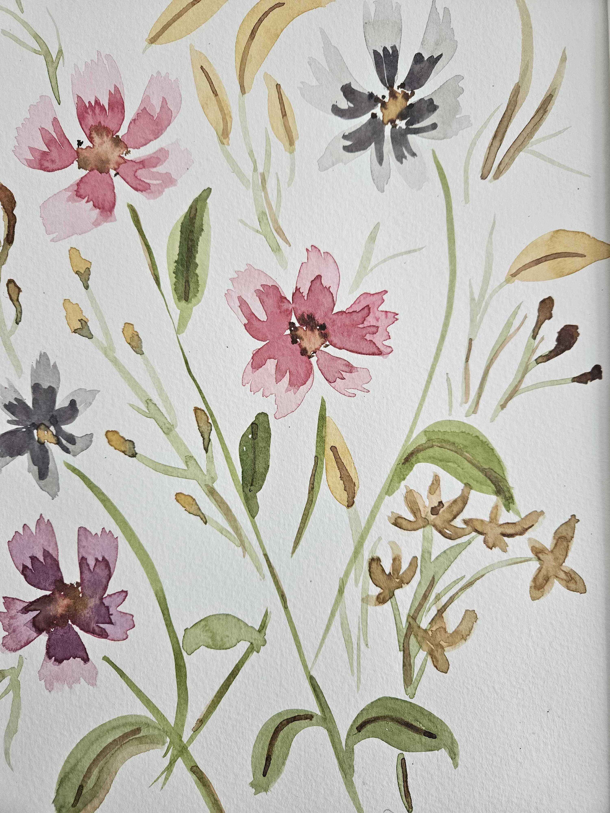
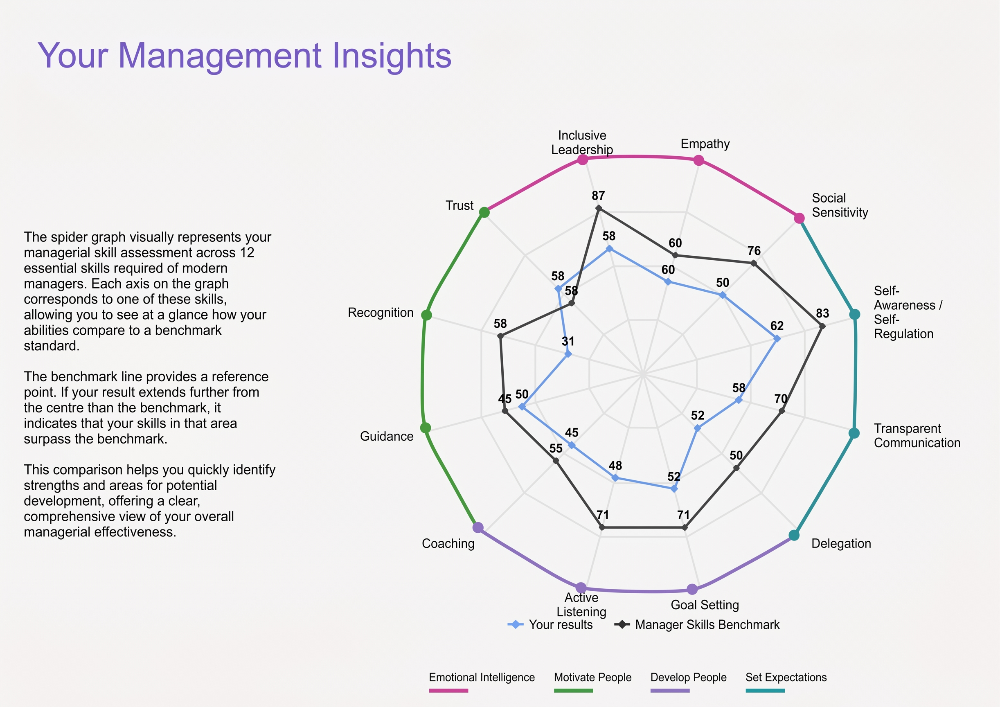

Bruna Marques da Silva
I bring structure to complexity and colour to ideas, turning user needs into clear, well-organised products that people enjoy.
8+ yrs
Delivery Impact
CSPO®
Agile Certified
100k+
Users Empowered
Thank you for taking the time to explore my work.
I hope you enjoy exploring my journey and projects. I would be delighted to discuss how my experience and approach can support your team's current objectives and challenges.
About me
Certified Product Leadership
Certified Scrum Product Owner (CSPO) with an Energy Engineering background and 8+ years delivering data-driven digital products across energy, SaaS and public-impact sectors.
Full-Lifecycle Guidance
Guides products from discovery through adoption and BAU operations, specialising in Agile delivery, supplier coordination, readiness activities and adoption monitoring.
Analytics & Practical AI
Uses analytics to uncover insights and AI tools to accelerate collaboration, shaping products that genuinely solve real problems, not buzzwords.
Clarity & Alignment
Creates clarity for cross-functional teams: backlog management, facilitated workshops and aligned stakeholders, so teams deliver high-impact outcomes.
Rigour Meets Design
Blends analytical rigour with human-centred design, so every solution is technically sound and user-focused, with a strong eye for accessibility and usability.
Regulated Scale & Operations
Comfortable in regulated environments and large user bases: aligning stakeholders, resolving blockers and building reliable processes.
Strategic Yet Hands-On
Strategic yet hands-on: defines vision and priorities while also diving into testing, iteration and delivery.
Life Away From Screens
I can find the value of life away from a screen: slow walks, open air, and days I never think to photograph.
Travel & Collecting Memories
Travel is one of my favourite ways to collect experiences. The pin badges I bring home from each place keep those memories visible.
Creative Outlets
Watercolour, embroidery and gardening keep my hands busy, and my mind makes far more sense while they are producing something nice.
Canine Companions
Dogs are a constant. Amora is mine, and I look after other dogs in my free time.
Next Chapter
Spain is the next stop: the plan is to relocate there during Q1 2026.

Timeline
An overview of my career journey across energy infrastructures, enterprise SaaS transformations, and global digital products.
Product Analyst
Based in Nottingham, England, directing product support operations and Agile delivery across the Smart New Connections portfolio within Net Zero Delivery, driving operational improvement for large-scale smart meter deployments and infrastructure onboarding for housing developers nationwide. Leads external engineering partners through sprint cycles, aligning technology backlogs with core business objectives, and oversees product quality assurance and production sign-offs across enterprise architectures including Microsoft Dynamics 365. Governs core operational frameworks and data architectures for seamless site handovers, billing integrity and targeted customer-journey communications, and mitigates operational risk by designing contingency frameworks for complex system edge cases. Acts as the strategic bridge between senior leadership, operational units and third-party development teams to shape delivery roadmaps and execute short-term operational plans.
Product Owner
Led platform modernisation and new product development for B2B and B2C audiences, collaborating with internal teams, external partners and clients. Directed the migration of two legacy platforms for 200+ B2B clients, including SSO and controlled subscriptions, then extended the migration to 10,000+ active B2C users and a database of 50,000+, moving payments and 4,000+ content assets into a new CMS. Led the Manager Skills Assessment from ideation to launch in six months: adopted by 5% of clients in its first version, it became the second-largest B2C revenue driver for two consecutive months. Supported continuous improvements, team training, product documentation and Agile practices, earning Inspirational Leadership and Values Champion nominations.
Product Owner
Worked across five client projects with global, multicultural teams, translating client needs into user stories and clear acceptance criteria while leading reprioritisation and scope alignment. Delivered a multilingual platform translation, coordinating specialist validation and resolving interface challenges caused by different text lengths and structures. Supported a training and purchasing platform serving thousands of third-party vendors for a manufacturing client, and helped design and launch a documentation platform that connected archived documents into a useful knowledge system. Also mentored interns and facilitated cross-team discussions.
Operational Middle Office / Product Owner
Combined energy consulting with digital product delivery in Brazil’s deregulated energy market. Managed 40+ energy contracts, achieving savings of up to 40% through strategic management and negotiation, and produced monthly analyses of energy costs, regulatory changes and market trends to support client decisions. Guided clients towards energy strategies aligned with ESG principles. Took on Product Owner responsibilities by leading the automation of manual monthly reporting: defining requirements, writing user stories and partnering with developers to create a more scalable, efficient reporting system. Became a finalist in a product design competition, applying Design Thinking to energy challenges.
Projects
Selected projects showcasing product discovery, user-centric journey design, enterprise systems, and business outcomes.
Manager Skills Assessment
Navigating thousands of resources to find the right leadership advice is exhausting. The Manager Skills Assessment transforms an overwhelming library into a guided, intentional journey by giving managers an instant benchmark against industry standards and a personalized roadmap for growth.
More Projects
Debt Management System (DMS)
Pivoting automated debt collection for housing developers by uncovering frontline compliance gaps, prototyping validation flows, and introducing lightweight PRDs.
Commercial E-Commerce Platform
Delivering a localized commercial catalog with API pricing integrations under fixed agency budget, timeline, and data constraints.
Energy Market Automation
Transitioning from manual month-end Excel calculations to structured technical requirements, automating 40% of the operational workflow.
Manager Skills Assessment
Think about the last few digital apps you downloaded. How many of them opened with a quick assessment the very first time you logged in? Modern digital products, especially those focused on driving behavior change, such as fitness or wellbeing platforms, rely heavily on initial assessments to establish a baseline and deliver tailored personalization. The Manager Skills Assessment was built on this exact principle. Sitting right at the intersection of Mindtools' product vision and business strategy, it transforms how users navigate our ecosystem. Instead of dropping users into an overwhelming library, the assessment acts as a personalized compass that boosts engagement and guides their growth journey from day one. At the same time, it serves as a high-value standalone product that opens new enterprise sales opportunities while taking the heavy lifting of content curation off the shoulders of HR and L&D teams.
User Research & Friction Discovery
Engage on the discovery of key friction points in how managers consumed learning materials through user research and market analysis.
Actionable Journey Design
Designed the user journey to ensure managers received instant, actionable feedback and clear next steps rather than static scores.
Iterative MVP Staging
Defined the product stages starting with an MVP to collect early bird adopters feedback and iterating for future stages.
Vision & Content Bridge
Defined the product vision and roadmap to bridge the gap between our assessment tool and our core content library.
Supplier & Tool Governance
Selected the third party tool to provide the assessment feature within Mindtools requirements and terms and managed the supplier relationship.
Onboarding & Monetization
Positioned the tool both as an entry point for platform onboarding and as a standalone product ready for market monetization.
See more
Your data-driven path to managerial success

E.ON Debt Management System (DMS)
At E.ON Smart New Connections, a historical backlog of unpaid bills from housing developers created a significant debt book. While unpaid invoices mounted, stopping meter installations wasn't an option: installing meters was crucial for meeting UK government smart meter rollout targets and securing future residential customers. However, handling debt collection manually was out of the question since it would have overwhelmed support teams and degraded service quality. The solution was an automated Debt Management System (DMS) designed to identify, collect, and manage payment plans automatically. DMS MVP1 identified debt and established automated 1-to-3-month payment plans. The diagram below provides a high-level view of the customer journeys implemented in DMS MVP1.
.jpeg)
I joined just after MVP1 launched and received the requirements for MVP2. They focused on automating plan confirmations, payment reminders, and escalation paths. However, during early discovery, I uncovered a critical gap: phone support agents were regularly agreeing to payment plans that breached official E.ON terms, severely weakening recovery rates. Recognizing the risk, I pivoted team priorities to build automated system validations into the agent workflow first. Following this, I prototyped the automated confirmation flow (using Canvas in Gemini) and launched both confirmation and reminder email journeys, ultimately boosting collection effectiveness while keeping agent workload at zero.
Operational Discovery
Conducted operational discovery that exposed core compliance gaps in manual agent workflows.
Roadmap Reprioritization
Reprioritized the product roadmap to address root-cause collection failures before introducing downstream automation.
Journey Prototyping
Designed and prototyped the automated email confirmation flow using Canvas in Gemini.
Operational Readiness
Worked closely with the operational readiness team to ensure training materials were comprehensive, updated, and clear technical support channels were established for support teams.
Scope & Capacity Governance
Managed scope trade-offs, reallocating engineering capacity toward high-impact validation controls while deferring lower-priority escalation features.
Improving Ways of Working: Introducing Product Requirement Documents (PRDs)
The Debt Management System was my first project at E.ON, and I quickly identified opportunities to improve how we defined and delivered product requirements. In MVP1, requirements were communicated primarily through complex Miro boards. While visual, this left the team without a single source of truth or clear scope boundaries generating friction and leaving edge cases unanswered when I onboarded.
To solve this, I introduced structured Product Requirement Documents (PRDs). Striking the right balance was essential: documentation should never become a bottleneck that delays execution, but the process of writing requirements forces critical thinking and uncovers overlooked questions early. Because the team was new to PRDs, I purposefully introduced a lightweight, approachable template to drive adoption without adding heavy process overhead.
Feedback upon adoption
Developers shared that they kept the PRD open daily as an essential guide for implementation work.
Became the go-to document to read before calls, keeping alignment on explicit in/out-of-scope items.
QA teams built thorough automated and manual test scenarios much earlier in the sprint cycles.
Product Requirement Document | Initiative Name Status: Draft | Owner: Bruna Marques 1. Background: Describe problem, business goals, and customer data points. 2. Important Links: Figma designs, technical architecture, Jira tickets, research decks. 3. Use Cases Affected: User scenarios altered, legacy workflows touched. 4. Requirements: Functional must-haves, technical constraints, out-of-scope boundaries.
Culligan Commercial E-Commerce Platform
Delivering a dynamic commercial purchasing platform and technical SEO architecture within strict agency fixed-scope constraints.
Execution Under Constraints
Delivering a public-facing e-commerce solution within fixed agency constraints requires a sharp focus on prioritization and execution. At Dentsu World Service, I led the product delivery for Culligan UK, adapting their digital web presence to support dynamic commercial purchasing. Working within a strictly pre-defined budget, scope, and timeline, the primary challenge was determining how to fulfill these ambitious goals efficiently without compromising on user experience or technical quality.
The initiative focused on two key pillars: optimizing public website architecture for discovery and building a localized B2B commercial catalog. To maximize search visibility, I guided key SEO and navigation improvements, such as breadcrumb structures and page speed optimizations, to help Culligan rank higher in search engine results. Simultaneously, we built a dynamic catalog system that tailored product availability, order limits, and pricing based on the buyer's region. Because Culligan's backend pricing data was served through a third-party API, and strict data protection rules prevented us from accessing their raw database directly, I navigated complex data-format discrepancies during integration testing to deliver a seamless, fully compliant buying experience on time and within budget.
Product Insight: Navigating Project-Based Agencies vs. In-House Product Management
Working as a product manager in a project-based agency comes with a unique set of challenges. When deliverables are bounded by fixed budgets and pre-defined scope, product decisions often risk becoming purely execution-focused rather than value-driven. As a third-party partner, you aren't always privy to the broader company strategy, metrics, or internal context that typically guide product trade-offs and align cross-functional teams.
The Culligan project was a pivotal learning experience in bridging this gap. Rather than operating simply as an external delivery team, we actively built relationships with Culligan's internal stakeholders to deeply understand their high-level business goals. Uncovering how our specific scope fit into their broader strategy allowed us to connect our daily technical decisions back to real business value, giving us the leverage to propose strategic improvements that were readily accepted.
"This project reinforced for me how crucial business context is to effective product management, and it ultimately inspired my desire to transition into in-house product roles where I could own the full product lifecycle and connect strategy directly to outcomes from the inside."
Brazilian Energy Market Automation
How manual monthly spot market calculations, complex spreadsheet workflows, and communication friction uncovered my transition into Product Management.
The Origin: Bridging Operations & Engineering
My entry into product management started organically before I even knew the title existed. Early in my career at an energy consultancy in Brazil, I worked in open energy market operations. Every month, our team balanced commercial energy consumption against active power contracts, determined whether clients needed to buy or sell short-term power, and executed transactions on the spot market. The entire operational workflow relied heavily on legacy Microsoft tools, complex Excel spreadsheets, and semi-automated PDF reports. The process was incredibly time-intensive, subject to strict monthly deadlines, and highly manual, creating significant operational pressure and high risk for human error. Automating this system was crucial, not only to eliminate mistakes but also to free up our team to focus on strategic advisory for our clients.
When leadership decided to automate our workflow, I was asked to explain my monthly process to a team of software developers so they could build an automated system. At first, this felt like a huge opportunity. I was eager to eliminate the repetitive tasks so I could apply my market knowledge to guide clients on better energy decisions. However, my initial attempt exposed a classic product challenge. When the developers invited me to test the first release, what they built was completely different from what I thought I had explained. Surprised by the disconnect, I tried explaining the process again in a different way. While the second delivery improved slightly, I realized that continuing at this pace would take years to build the automation we needed.
Uncovering Hidden Requirement Logic
Determined to find a better way, I started talking directly with the development team and networking with other professionals in software building to learn how requirements were structured. Through this process, I realized that much of my day-to-day operational knowledge was so second nature to me that I had left critical business rules and edge cases completely unstated. I had not realized how much hidden requirement logic existed in my head.
Once I learned how to identify requirements and structure tasks effectively for the engineering team, our communication and delivery velocity improved dramatically. By the time I moved on from the company, we had successfully launched a system covering roughly 40% of the complex monthly operational workflow. This project was a major milestone for me because it taught me how to bridge the gap between business operations and technical execution, ultimately revealing my path as a product manager.
Of total high-risk monthly operational calculation steps automated within the first system iterations.
Transformed tacit energy engineering logic into structured user stories, acceptance criteria, and testable edge cases.
Education & Credentials
Strong engineering foundation combined with product management specialisations.
Bachelor of Science
Energy Engineering
Rigorous quantitative curriculum focusing on thermodynamic systems, mathematical modeling, simulation, and energy distribution infrastructures.
Graduated with Distinction in Numerical Modeling
Scrum Alliance
Certified Scrum Product Owner (CSPO®)
Formal validation of stakeholder alignment, story mapping, backlog prioritization techniques, sprint planning, and empirical product discovery.
Active Credential & Ongoing Community Mentorship
Selected Workshops & Continuous Growth
AI for Product Managers
Prompt engineering, synthetic user testing, and roadmap acceleration.
Data Analytics & Growth
Funnel analysis, cohort retention, and SQL-backed cohort identification.
Human-Centred Interaction
Inclusive UX frameworks, cognitive accessibility, and usability labs.
Contributions & Speaking
Sharing knowledge on Product discovery, sustainable tech, and community facilitation.
Beyond Feature Factories: Grounding Product Teams in Physical Realities
How hardware constraints and engineering precision teach digital product owners to ship higher-quality releases.
Facilitating High-Stakes Stakeholder Workshops
Practical methods for defusing divergent executive opinions and arriving at prioritised MVPs.
Transitioning from STEM & Engineering to Product
Mentoring early-career women engineers on transitioning their analytical capabilities into product leadership.